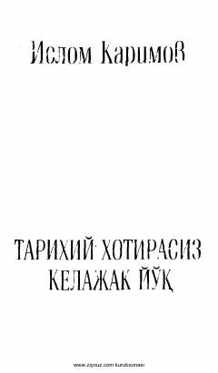

TXTarixiy xotirani saqlash va milliy o'zlikni anglashning ahamiyati haqidagi asar.
Ushbu asarda O'zbekistonning boy tarixi, madaniy merosi va xalqimizning o'zligini anglash masalalari tahlil qilinadi. Muallif tarixiy xotirani saqlash kelajak taraqqiyoti uchun naqadar muhim ekanligini ta'kidlaydi.